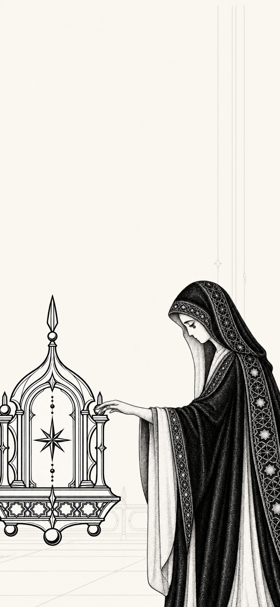

<!doctype html><html lang="zh-CN"><meta charset="utf-8"><meta name="viewport" content="width=device-width,initial-scale=1"><title>审美外挂 · 原背景线延长</title>
<style>*{box-sizing:border-box}body{margin:0;background:#e8e6df;color:#30312b;font:14px/1.6 system-ui,sans-serif}header,footer{max-width:850px;margin:22px auto;padding:0 20px}h1{font-size:19px;font-weight:500;margin:0}p{margin:4px 0 14px;color:#73746c;font-size:13px}.controls{display:flex;gap:8px}button{font:inherit;padding:7px 13px;border:1px solid #aaa99e;border-radius:3px;background:transparent;cursor:pointer;color:inherit}button[aria-pressed=true]{background:#33362e;color:#fff;border-color:#33362e}button:focus-visible{outline:2px solid #333;outline-offset:3px}main{display:grid;grid-template-columns:repeat(2,minmax(0,390px));gap:28px;justify-content:center;padding:0 20px}figure{margin:0;min-width:0}figcaption{display:flex;justify-content:space-between;font-size:12px;margin-bottom:10px}.muted{color:#797a70}.page{position:relative;aspect-ratio:390/844;overflow:hidden;isolation:isolate;background:#f7f4ec}.page img{position:absolute;inset:0;width:100%;height:100%;display:block}.extension{clip-path:inset(0 9% 58% 75%);mix-blend-mode:darken;pointer-events:none}.original .extension{visibility:hidden}.brand{pointer-events:none}footer a{color:inherit;text-underline-offset:3px}@media(max-width:600px){header,footer{padding:0 16px}header{margin:18px auto}main{grid-template-columns:minmax(0,390px);padding:0 12px}.baseline{display:none}h1{font-size:17px}}</style>
<header><h1>只延长原有的淡背景线</h1><p>沿原位置向上接续，原来的小星饰仍留在人物头顶。</p><div class="controls"><button id="new" aria-pressed="true">延长后</button><button id="original" aria-pressed="false">原版</button></div></header>
<main><figure class="baseline"><figcaption><span>原版</span><span class="muted">已有背景线</span></figcaption><div class="page"></div></figure>
<figure><figcaption><span id="label">延长后</span><span class="muted">待审</span></figcaption><div class="page" id="trial"></div></figure></main>
<footer><p>本次只接长右侧原有淡线。字标、人物、神龛及下方背景沿用原文件。静态预览，尚未替换正式首页。</p></footer>
<script>for(const id of ['new','original'])document.getElementById(id).addEventListener('click',()=>{const original=id==='original';document.getElementById('trial').classList.toggle('original',original);document.getElementById('label').textContent=original?'原版':'延长后';document.getElementById('new').setAttribute('aria-pressed',String(!original));document.getElementById('original').setAttribute('aria-pressed',String(original));});</script></html>
